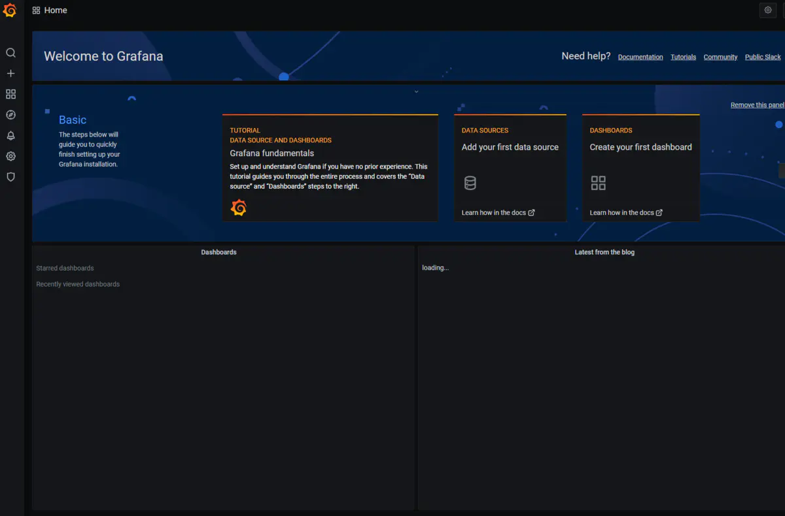
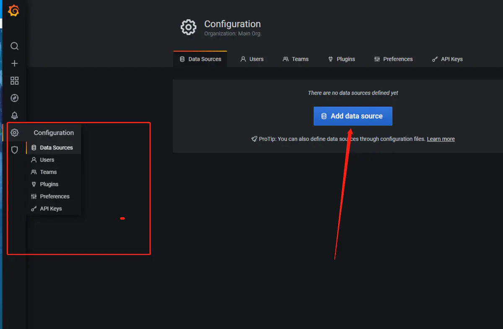
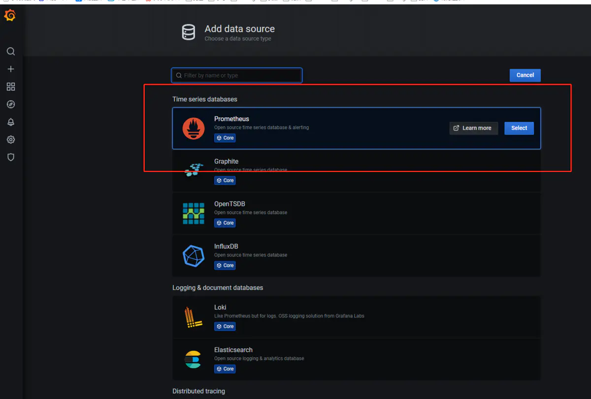
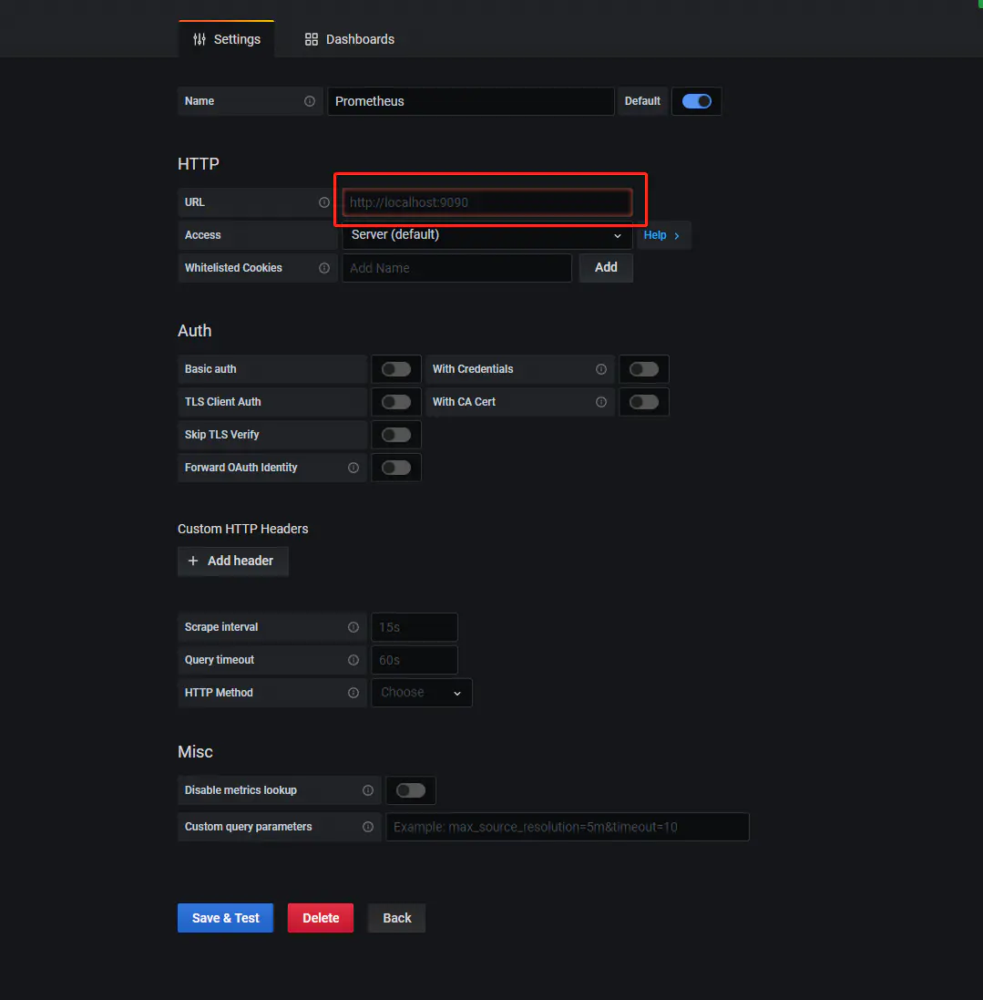
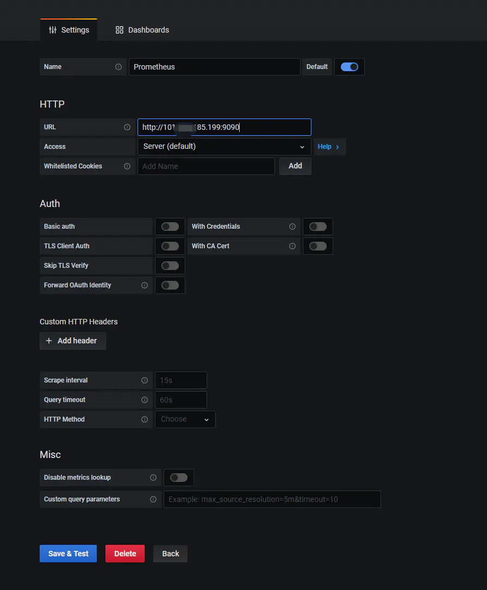
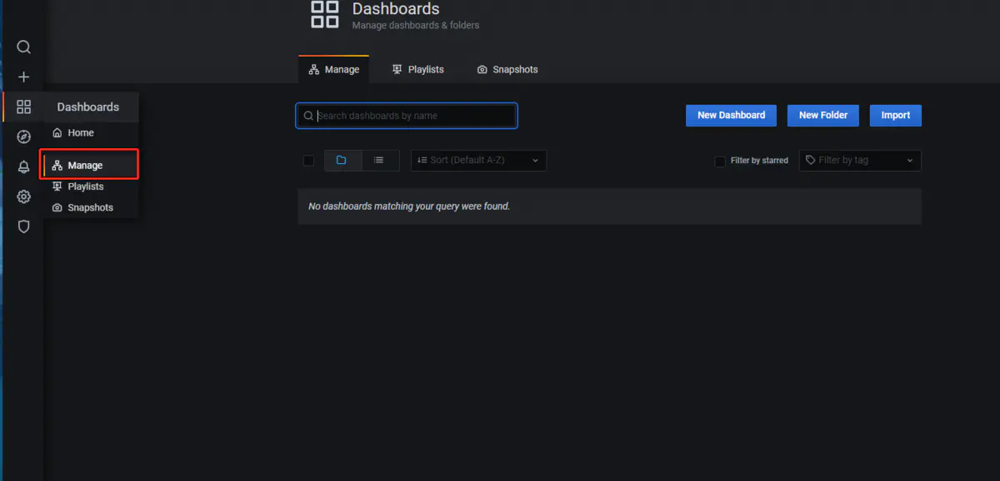
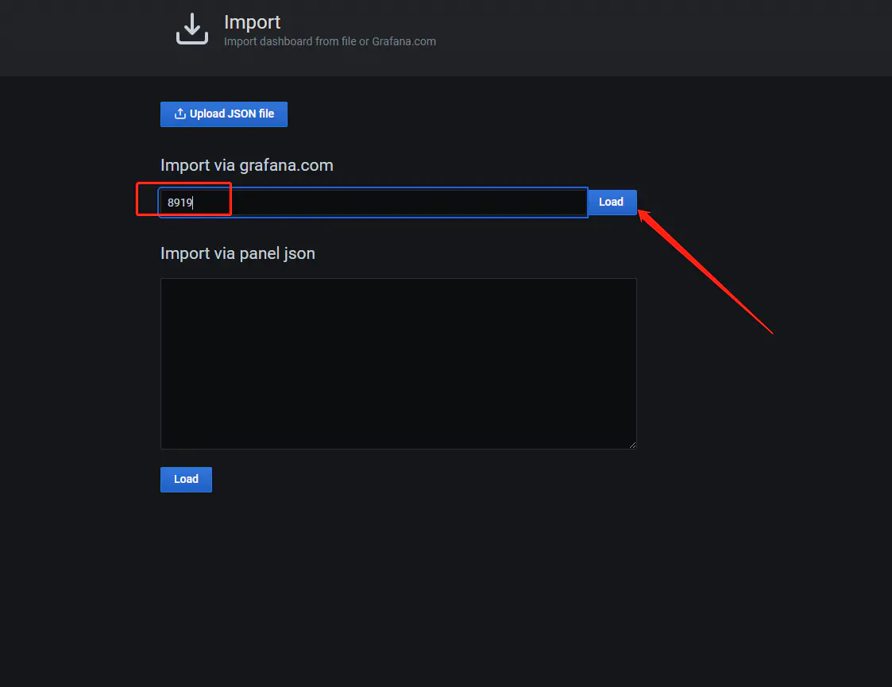
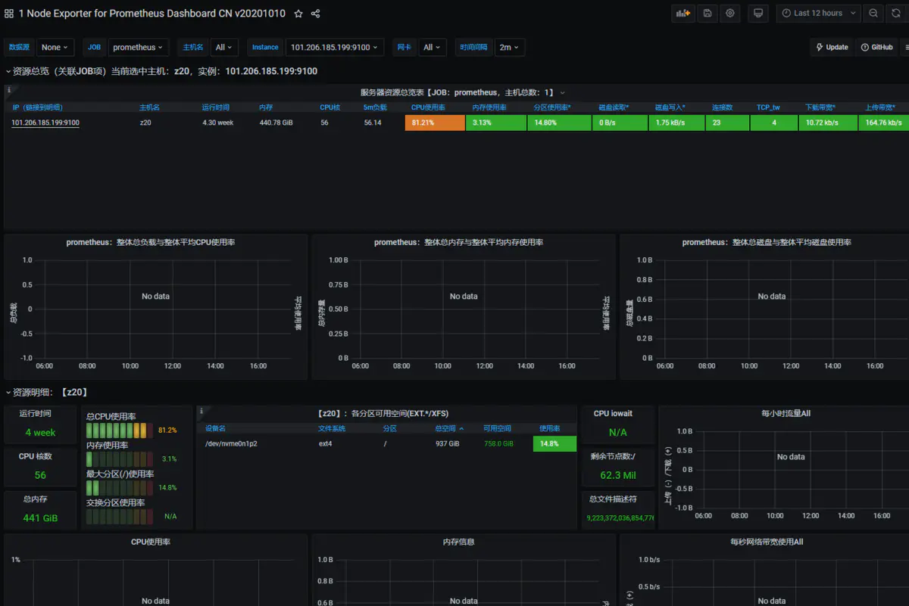
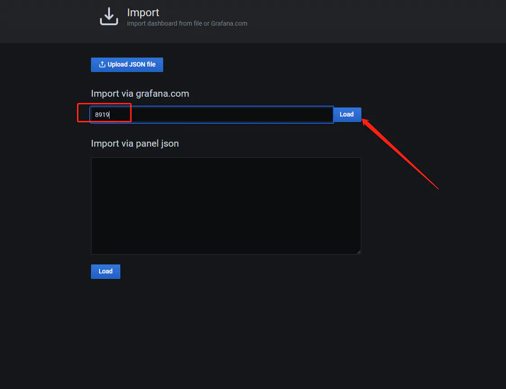
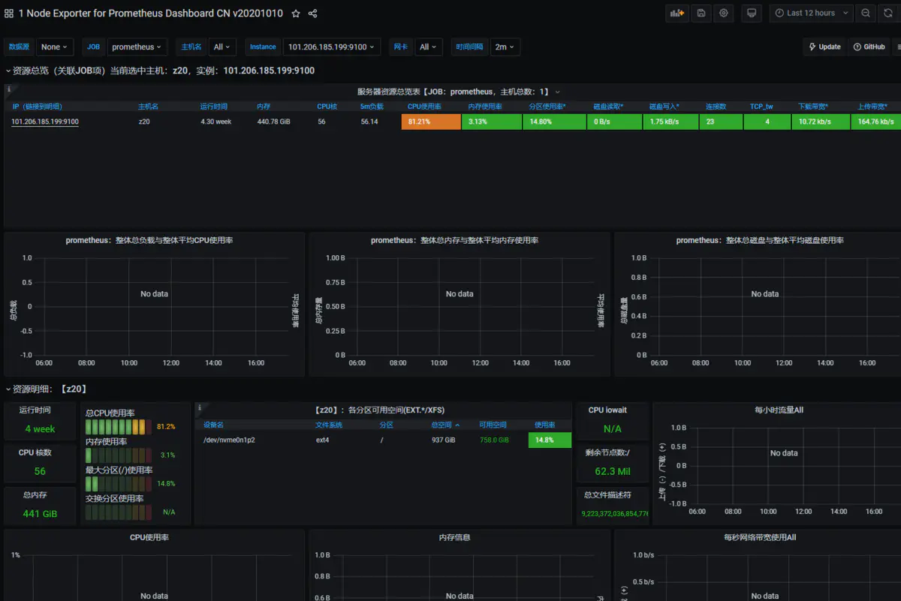

利用granfana、prometheus、node_exporter示例监控部署
下载prometheus、grafana、node_exporter程序。
wget http://file.ethlink.cn/tools/prometheus.tar.gz
wget http://file.ethlink.cn/tools/node_export.tar.gz
wget http://file.ethlink.cn/tools/grafana_7.3.4_amd64.deb
解压tar包，安装grafana
tar -zxvf prometheus.tar.gz
tar -zxvf node_export.tar.gz
dpkg -i grafana_7.3.4_amd64.deb
配置prometheus
`cd prometheus-2.23.0.linux-amd64`
`vim prometheus.yml`

填写要监控的主机的IP，端口都是9100 。node_exporter服务端口就是9100。
启动prometheus
vim /etc/systemd/system/prometheus.service
[Unit]
Description=Prometheus Monitoring System
Documentation=Prometheus Monitoring System
[Service]
ExecStart=/home/ubuntu22/tools/prometheus-2.38.0.linux-amd64/prometheus --config.file=/home/ubuntu22/tools/prometheus-2.38.0.linux-amd64/prometheus.yml --web.listen-address=:9090
Restart=on-failure
[Install]
WantedBy=multi-user.target
加载、开机自启动、启动服务、查看服务、重启服务、停止服务
sudo /bin/systemctl daemon-reload
sudo systemctl start prometheus
sudo systemctl status prometheus
sudo systemctl restart prometheus
sudo systemctl stop prometheus
配置node
`vim /etc/systemd/system/node_exporter.service`
写入如下内容：
[Unit]
Description=node_exporter
Documentation=https://github.com/prometheus/node_exporter
[Service]
ExecStart=/home/wangchenxi/usr/node_exporter-1.4.0-rc.0.linux-amd64/node_exporter --collector.systemd --collector.processes
Restart=on-failure
[Install]
WantedBy=multi-user.target
执行开机自启动服务、启动服务、查看状态
sudo systemctl daemon-reload
sudo systemctl enable node_exporter.service
sudo systemctl start node_exporter.service
sudo systemctl status node_exporter.service
配置webui
打开主机地址+3000端口。
例如：主机IP为192.168.22.23
浏览器输入以下地址： http://192.168.22.23:3000
默认用户为 admin admin
 登陆后修改密码
登陆后修改密码
修改完密码进入主页。准备配置数据源
 点击Add data source  选择prometheus  填入主机的IP,端口号为9090  点击保存并测试（save&test） 
导入模板配置


 



搭建其他服务的监控
1. 例如mysql、nginx这些都有对应的，监控模板和对应的node服务，可以自行查找攻略；
2. 如果要监控自主开发的服务或系统，需要自己实现对应的prometheus_client，然后在prometheus中配置添加对应节点。
ProQL
如果要自己定义展示模板，可以学习prometheus的query language，简称ProQL。